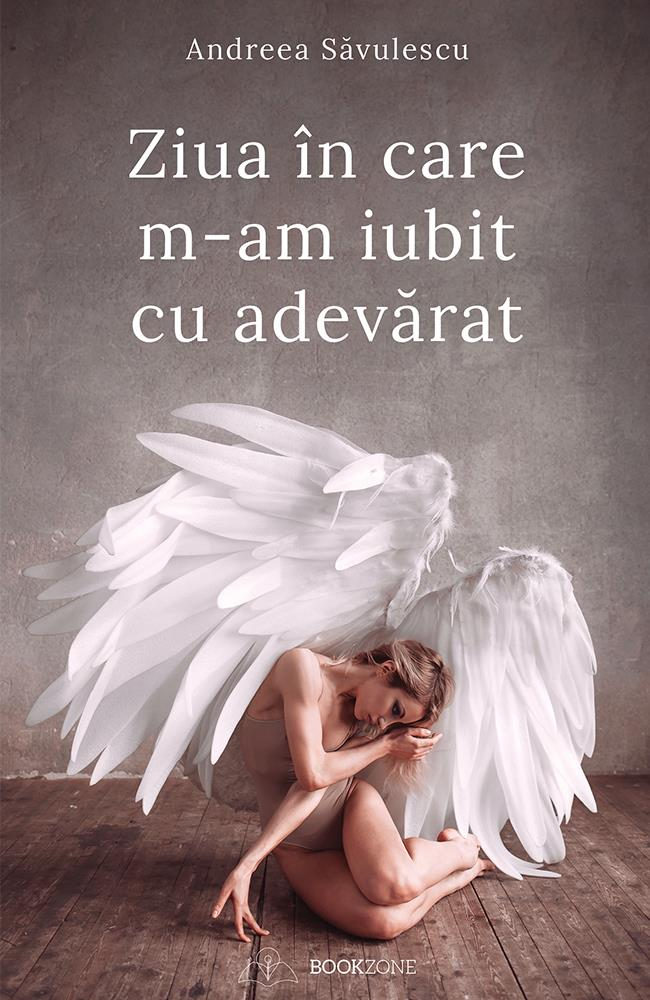

Ziua în care m-am iubit cu adevărat
O carte-terapie care vindecă traumele trecutului și îți dă încredere în viitor. Scrisă din două
perspective, personală și psihologică, te învață să îți oferi iubirea pe care simți că ceilalți
nu ți-o pot da.
- Andreea Săvulescu
29 Lei